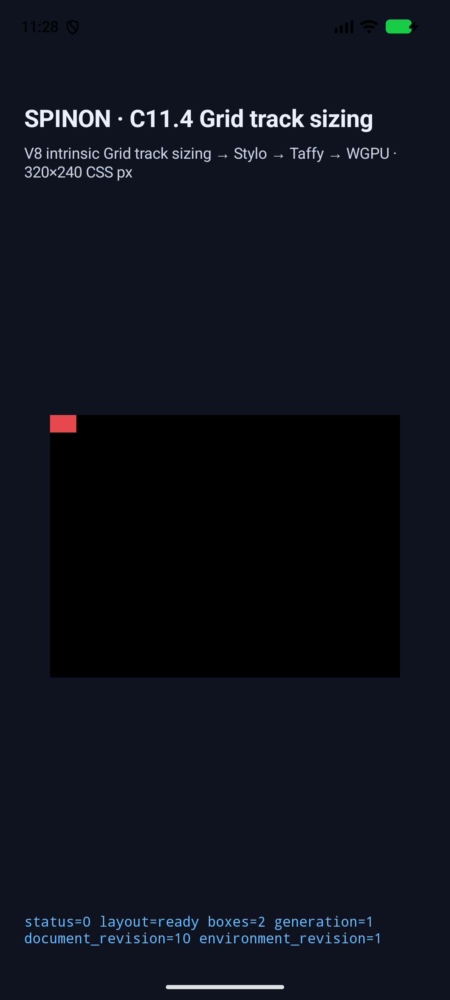
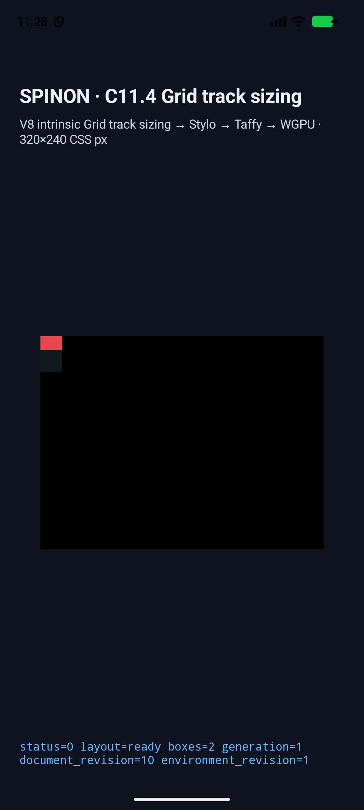
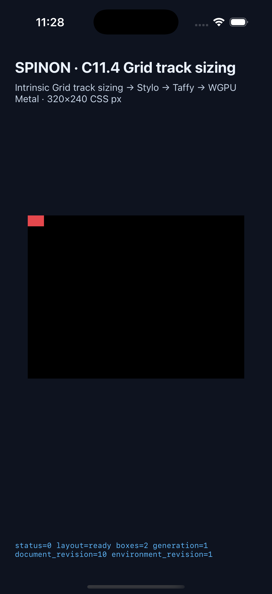
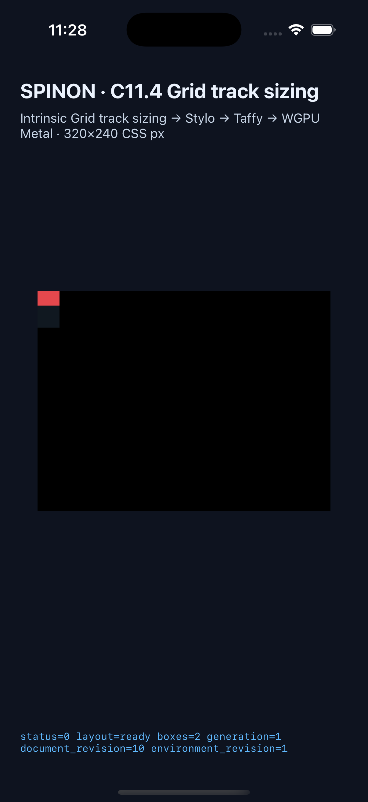

상태: 구현 PR #632이 2026-10-25T14:56:09Z Rebase and merge로 병합됐습니다(merge SHA 64739104e4be3e06f95c60b94a5eb1f87a4e78b0). 이 두-scene 제한 slice는 전체 Grid track sizing이나 일반 CSS 지원 완료를 뜻하지 않습니다. C11.4 checkbox와 공식 완료 수 72/213은 유지합니다.
기대값은 저장소의 plan/c11-4-cyclic-percentage-auto-repeat-row-axis.md 및 spec/internal/evidence/c11-4-cyclic-row-percentage-auto-repeat-precomparison-2026-10-25/README.md에 고정했습니다.
| 장면 | Root | 반복 수 / basis | Rows | 결과 |
|---|---|---|---|---|
cyclic-max-content-auto-fill-rows | 24×16px | 1→1 / null→16px | [8px] | 통과; item이 track을 8px 넘음 |
definite-40px-auto-fill-control-rows | 24×40px | 2 / 40px | [20px, 20px] | 일반 definite 경로 통과 |
Android API 37 ARM64 16 KB AVD와 iPhone 17 Pro / iOS 26.2 Simulator에서 각 target/control 장면이 통과했습니다. Target pass 순서는 IntrinsicMaxContent → FinalDefinite이고 row repeat count는 재확장되지 않습니다.
이 두 장면은 capture script에 pixelSamples가 없어 PixelCopy/Metal surface pixel capture를 실행하지 않았습니다. 아래 스크린샷은 scene 배치 확인용이며 pixel equality 근거가 아닙니다.




실기기 GPU, compositor 제출 이후 픽셀, WPT 전체 적합성은 이 근거가 증명하지 않습니다. C11.4 공식 완료 상태와 72/213 집계는 이 제한 slice로 승격하지 않습니다.